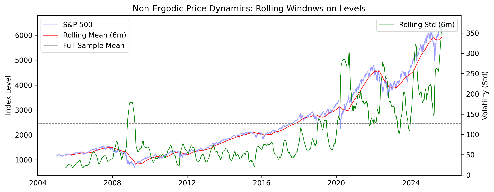
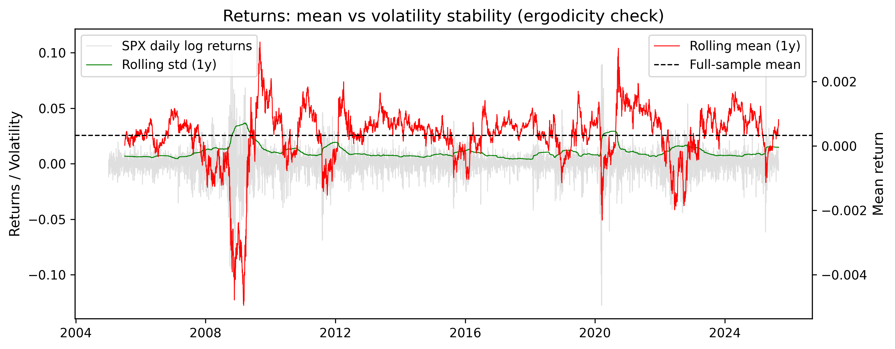
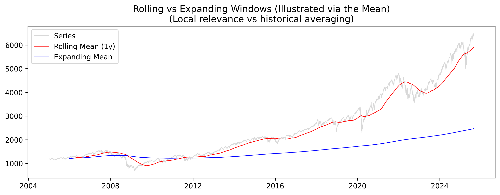
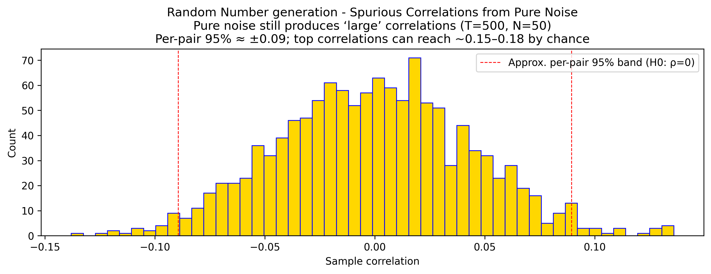

Data Science Workshops
Overview & Learning Outcomes
Historical Lens
The lectures will include hands-on work. There will be a teams project which will be marked.
Outputs: Notebooks + figures/charts + key insights
High Level Agenda:
- Set up Python Environment.
- Data Engineering.
- Predictive Analytics 1.
- Predictive Analytics 2.
- Model Stacking.
- Networks.
Section 1 — Environment & Foundations
Goals: reproducible local/Colab setup; environment management; core stack
Section 2 — Data Engineering
Goals: handle multi-source, multi-frequency macro/market data.
2.0 Time Series and Panel Data
- Univariate time series represent the evolution of a single variable over time and form the foundational data structure for trend detection, volatility analysis, and regime identification (e.g., daily S&P 500 returns).
- Multivariate time series extend this framework to multiple variables observed at the same frequency, enabling analysis of co-movement, dependence, and dynamic interactions across markets or macro-financial drivers (e.g., daily equities, bonds, and commodities).
- Panel data combine cross-sectional and temporal dimensions, capturing repeated observations of multiple entities over time and allowing separation of common dynamics from unit-specific effects (e.g., quarterly GDP across multiple countries).
- Mixed-frequency data arise when variables are observed at different temporal granularities, requiring explicit alignment, aggregation, or state-space treatment to integrate high-frequency market data with lower-frequency macroeconomic indicators.
-
📗
Data Lake - Lakehouse Fundamentals -
📗
Time Series - Structural Foundations -
📗
Time Series - Some Challenges
2.0.2 Implications
Ergodic Assumption (Univariate)
Many classical time series and econometric models implicitly assume ergodicity: time averages converge to ensemble averages. In practice, this means that the historical distribution of a series (mean, variance, correlations) is assumed to be stable over time, so that patterns observed in the past are informative about the future.
Rolling Mean

Under ergodicity, longer historical samples improve estimation and reduce uncertainty.
Non-Ergodic Reality
Financial and macroeconomic time series are typically non-ergodic. Structural breaks, regime changes, policy shifts, crises, and technological changes alter the underlying data-generating process over time.
Non-ergodic Reality

As a result, historical averages may combine incompatible regimes and become poor guides for future behavior.
Rolling vs Expanding Windows
Rolling windows emphasize recent data and adapt to regime changes but suffer from higher estimation variance. Expanding windows use all available data, reducing variance but implicitly assume long-term stability. The choice reflects a trade-off between adaptability and statistical efficiency.
Rolling vs. Exanding Windows

The Shortest Series Problem (Multivariate)
Multivariate methods relying on covariance or correlation matrices require aligned observations across all variables. When variables have different start dates, the effective sample length collapses to the shortest series, leading to information loss.
Curse of Dimensionality
An N-variable multivariate system requires N(N−1)/2 pairwise covariances. The number of parameters grows quadratically with dimensionality, quickly overwhelming available sample sizes. e.g. 50 Factors := 1225 covariate pairs.
Spurious Correlations
In high-dimensional settings with limited data, random noise can generate apparently significant correlations. As dimensionality increases, spurious relationships can dominate true signal, obscuring meaningful structure.
Spurious Correlartions

Summary:
2.1 Data Sources
- Macro data (FRED, EIA, World Bank, Trading Economics)
- Market data (Yahoo,
Alpha Vantage ) - Enterprise platforms (Refinitiv, Bloomberg)
-
Other Source Link ETF Database https://etfdb.com/ FinViz https://finviz.com/ Google Finance https://lnkd.in/gWHw9Fhg Investing https://www.investing.com/ Macromicro https://en.macromicro.me/ MarketWatch https://lnkd.in/gcWCY34e Morningstar https://lnkd.in/giKy_WHw Quandl / Nasdaq Data Link https://lnkd.in/gRCA676Q Seeking Alpha https://seekingalpha.com/ StockCharts https://lnkd.in/gQEjzWzW Tiingo https://www.tiingo.com/ TradingView https://lnkd.in/gDcDb6dy - Prices and returns
- Curves
- Spreads
- Fundamentals
- MacroEconomic
- etc.
- Entities
- Events
- Sentiment
- Other topics mapped onto a relevant universe with reliable timestamps
- News
- Transcripts
- Filings
- Policy releases
- Other text-based disclosures
Data Storage and Research-Layer Querying
Data Science research pipelines typically blend “quick-to-iterate” file-based workflows with database-grade queryability.
Flat files (CSV/Parquet/JSON)and glob-based partition merges support fast experimentation and reproducible backtests.
Relational dtabases & SQL provides consistent joins, constraints, and auditable transformations.
DuckDB is particularly effective as a research-layer engine: it queries directly over local/object-store files with vectorized performance, enabling analysts to scale from notebooks to repeatable batch jobs without committing early to heavyweight infrastructure.
API-Based Market, Macro, and Alternative Data Ingestion
API ingestion is the buy-side bridge from raw vendor feeds to standardized research factors, e.g.
Practical differences Revision policies, corporate action adjustments, symbol/mastering conventions, rate limits, and licensing changes must be made explicit in metadata and logging to ensure backtest integrity.
Structured Data Normalization and Point-in-Time Integrity
Structured ingestion is about producing a clean, time-aligned “research-ready” panel:
Most empirical risk is data risk: sample selection bias, look-ahead bias, data revisions, and structural breaks can overwhelm apparent signal strength.
A disciplined schema—instrument mastering, PIT snapshots, and explicit calendars—turns ingestion into a controlled process, ensuring factor construction, regime labeling, and portfolio simulations remain comparable across assets and time.Yahoo Finance Ingestion
Yahoo Finance Ingestion
Alpha Vantage Finance Ingestion
DataReader Finance Ingestion
Refinitive Finance Ingestion
Unstructured Data Comments
Unstructured data can be highly valuable, provided it produces interpretable and investable signals. In practice, these signals typically take the form of:
For quantitative research, the critical step is converting raw text streams into robust, testable features. Common unstructured sources include:
The extracted features must remain stable under out-of-sample evaluation. Examples include entity-linked event counts, novelty or burst metrics, and embedding-based similarity measures. When engineered correctly, unstructured data provides a contextual layer that supports regime interpretation, risk monitoring, and early-warning signals rather than acting as a standalone prediction engine.
Data Quality Controls and Failure Management
In production research and risk stacks, ingestion errors are inevitable; the objective is to make them observable, contained, and recoverable. Missing ticks, API gaps, schema drift, and vendor restatements should trigger validation checks, quarantine paths, and automated backfills—never silent imputation. For buy-side users, the operational payoff is significant: fewer false factor moves, fewer spurious regime shifts, and clearer attribution when model behavior changes because markets evolve, not because data pipelines failed.
2.2 Handling Missingness, Frequencies & Quality
Missing Data
MCAR — Missing Completely At Random
Values are missing for reasons unrelated to any observed or unobserved variables (pure “random” missingness).
Missing values occure by chance, not because any systematic factor, there is no bias.
Tech error / random outage: A data vendor has intermittent server outages, causing random missing prices across dates and tickers.
MAR — Missing At Random
Missingness depends only on variables you do observe, not on the missing value itself.
Imputation is possible but must be conditioned on observable variables, multiple imputation methods possible.
MNAR — Missing Not At Random
Missingness depends on the value that is missing (the missing value itself influences whether it’s missing).
Firms with very poor earnings are more likely to delay or omit reporting, so the worst earnings are systematically absent.
-
📗
Imputing missing data -
📗
Unbalanced data -
📗
Smoothing Times Series Considerations -
📗
Univariate Outlier Considerations -
📗
Stationarity revisited
2.3 Feature Engineering
-
📗
Feature Enfineering - Look-ahead bias — Using future information in feature construction
- Centered / two-sided transformations
- Normalization and ranking computed using future data
- Label leakage via horizon construction
- Calendar/availability misalignment (macroeconomic data)
Derived features are variables computed from raw observations (and sometimes from other features) to make underlying structure more explicit for analysis and modelling.
They can be simple transforms (e.g., differences, log returns), rolling/windowed statistics (e.g., rolling volatility), or domain-specific constructs (e.g., RSI, credit spreads, sensor spectral power)
Look-ahead bias in financial markets and macro modeling is a class of information-flow violations i.e. your preprocessing: at time t your model is allowed to use only what would have been knowable and available at t, under realistic operational constraints.
The typical look ahead bias occurs as part of data preparation/pre-processing:
2.4 High Dimensionality, Multicollinearity & Factor Selection
- Detect relationship instability in Feature Engineering
-
📗
Feature Relationship Instability - High-Dimensional Feature Spaces: Redundancy, Collinearity, and Reduction
-
📗
High-Dimensional Feature Spaces: Redundancy, Collinearity
2.5 Latent Factor Discovery
Latent variables are unobserved (hidden) quantities that summarize the common drivers behind many observed variables. Instead of modelling dozens of noisy, correlated series directly, we infer a small number of latent “state” signalssuch as a business cycle, credit cycle, trend, or risk sentiment—that explain shared variation over time. We can think of them as compressed, denoised features: they reduce dimensionality and multicollinearity while often improving interpretability, because the latent states can be treated as underlying forces that shape what we observe.
Latent Variables and hidden quantities
Section 3 — Predictive Analytics I
Linear regression is the simplest benchmark: fast, explainable, and best when relationships are roughly stable and additive. It’s weak when effects change by level/regime, when interactions matter, or when predictors are highly correlated or noisy.
Polynomial regression is a “light” nonlinear extension that captures smooth curvature while staying close to linear-model thinking. It can overfit and behave poorly outside the observed range, so it’s mainly for mild, well-behaved nonlinearity.
Regularized regression (shrinkage/selection) is the practical choice when you have many correlated features: it improves stability and out-of-sample performance, but sacrifices some interpretability and clean statistical inference.
Spurious regression vs cointegration is the time-series warning label: trending variables can look related when they aren’t; cointegration is the special case where a long-run relationship is real. This determines whether you model levels (with cointegration structure) or switch to changes/returns.
Regression vs ML (rule of thumb): use regression when you want a robust, interpretable baseline or a stable linear signal; use ML when the problem is structurally nonlinear, interactive, or regime-dependent and prediction is the priority—while still controlling for time-series pitfalls like leakage and non-stationarity.
3.1 Non-Linear Relationships
A non-linear relationship means the effect of one variable on another is not constant: the sensitivity changes with the level of the driver or the system’s regime. In ML terms, that usually shows up as state-dependent patterns and distribution shift—the model sees mostly “normal” examples in training, then the mapping changes in stressed or transition states (often with lags/asymmetry), so the same input no longer implies the same output. This matters because even flexible ML models can average across regimes, overfit regime-specific quirks, and become miscalibrated or brittle in the tails, which is exactly where decisions are highest-stakes (transitions, extremes, stress scenarios)
Non-Linear Relationship
3.2 Cross Validation
Cross-validation makes models more robust by repeatedly testing on different train/validation splits, giving a more reliable out-of-sample estimate and helping control overfitting while tuning and selecting features/models. For ultimate validation, CV is useful but not decisive—final credibility should come from a strict holdout (ideally time-based or truly independent) plus stability/stress checks that better reflect real deployment conditions
Cross Validation
Section 4 — Predictive Analytics II
Goals: Machine learning for forecasting.
- Feature importance: SHAP analysis for time-varying relevance
- Hyperparameter optimization with proper time series validation
- Time-series validation: walk-forward, rolling, purged
- Tree-based: XGBoost, LightGBM, CatBoost, Random Forest
- Neural networks: LSTM, Transformer models
- Evaluation Metrics: RMSE, Hit Ratio, IC, PIT
- Model decay, monitoring, retraining
- Some Frameworks : NIXTLAR, DART, Prophet, NeuralProphet, GluonTS, Sktime, Chronos, NeuralProphet, other...
- Uncertainty paradigms:
- Deterministic: Point estimates + confidence intervals (model error)
- Stochastic: Distributional forecasts + multiple scenario paths (process uncertainty)
- Uncertainty Types Model uncertainty (MCMC) vs. Process uncertainty (Monte Carlo)
- Production Considerations:
- Model decay, monitoring, retraining
- A/B testing for model updates
- Feature drift detection
- Model versioning and rollback
- Latency and scalability considerations
Section 5 — Model Stacking
Goals: Combine models, quantify uncertainty.
- Simple averaging, weighted blends
- Meta-learners (stacking)
- Calibration, PIT histograms
Section 6 — Networks, Visualization & Communication
Goals: (1) Analyze network structures using graph-theoretic measures to understand influence, hierarchy, and flow; (2) Communicate these patterns and insights effectively using structured, dynamic visuals.
- Graph construction (firm, sector, macro)
- Centrality metrics (degree, closeness, betweenesseigen, MST)
- Visual tools: matplotlib, PyVis, plotly
- Animation & presentation of insights
- Communicating results